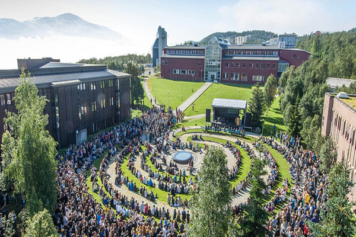

×
ISMA
ISMA успішно та безперервно розвивається, що дає можливість
запропонувати на ринках праці Латвії та Європи
конкурентоспроможну освіту, що базується на практичному
досвіді та поєднує теорію та практику.
- Підприємницька діяльність у ресторанному бізнесі(1-ий рівень)
- Прикладні інформаційні технології(1-ий рівень)
- Інформаційні системи(бакалаврат)
- Управління підприємницькою діяльністю(бакалаврат)
- Управління підприємницькою діяльністю у туризмі(бакалаврат)
- Управління підприємницькою діяльністю(магістратура)
- Комп'ютерні системи(магістратура)

VIA
Vidzeme University of Applied Sciences (ViA) пропонує
різноманітні програми навчання на бакалаврському та
магістерському рівнях, а також курси підвищення кваліфікації
у різних галузях прикладних наук. Ось огляд основних
програм навчання:
-
Бізнес та управління:
- Бізнес-адміністрування
- Менеджмент
- Маркетинг та реклама
- Управління персоналом
-
Інформаційні технології:
- Інформаційні системи та технології
- Програмне забезпечення та розробка
-
Технології та інженерні науки:
- Технології та інновації
- Електроніка та електротехніка
- Інженерна справа
-
Туризм та готельна справа:
- Управління туризмом та готельним бізнесом
- Туристичний маркетинг
- Готельне господарство та обслуговування
-
Соціальні науки та гуманітарні науки:
- Психологія
- Соціологія
- Журналістика та медіа
-
Педагогіка та освіта:
- Освіта та педагогіка
- Спеціальна (інклюзивна) освіта
-
Медичні науки:
- Медична сестринська практика
- Охорона здоров'я та профілактична медицина
-
Промисловий дизайн та технології:
- Промисловий дизайн
- Технології та матеріалознавство
-
Біотехнології та харчова промисловість:
- Біотехнології
- Технології харчових продуктів